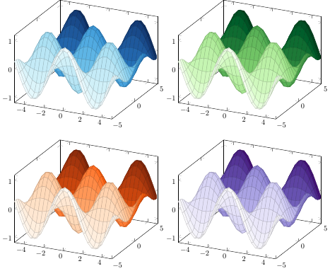

Julia types
There is some support to directly use Julia objects from different popular packages in PGFPlotsX.jl. Examples of these are given here. All code is assumed to include the following.
import PGFPlotsX
const pgf = PGFPlotsX; # hide
using LaTeXStringsColors.jl
Using a colorant as the line color
using Colors
μ = 0
σ = 1e-3
axis = pgf.Axis()
pgf.@pgf for (i, col) in enumerate(distinguishable_colors(10))
offset = i * 50
p = pgf.Plot(pgf.Expression("exp(-(x-$μ)^2 / (2 * $σ^2)) / ($σ * sqrt(2*pi)) + $offset"),
{
color = col,
domain = "-3*$σ:3*$σ",
style = { ultra_thick },
samples = 50
}; incremental = false)
push!(axis, p)
end
axis
Using a colormap
pgf.@pgf begin
p = pgf.Plot3(pgf.Expression("cos(deg(x)) * sin(deg(y))"), { surf, point_meta = "y" }; incremental = false)
colormaps = ["Blues", "Greens", "Oranges", "Purples"]
td = pgf.TikzDocument()
for cmap in colormaps
pgf.push_preamble!(td, (cmap, Colors.colormap(cmap)))
end
tp = pgf.TikzPicture("scale" => 0.5)
push!(td, tp)
gp = pgf.GroupPlot({ group_style = {group_size = "2 by 2"}})
push!(tp, gp)
for cmap in colormaps
push!(gp, p, { colormap_name = cmap })
end
end
DataFrames.jl
Creating a Table from a DataFrame will write it as expected.
using DataFrames
using RDatasets
pgf.@pgf pgf.Axis(
pgf.Plot(
{ only_marks },
pgf.Table(
dataset("datasets", "iris"),
{
x = "SepalLength",
y = "SepalWidth"
}
)
)
)
Countour.jl
A Table of a contour from the Contours.jl package will print as .tex in a format that is good to use with contour_prepared.
using Contour
x = 0.0:0.1:2π
y = 0.0:0.1:2π
f = (x,y) -> sin(x)*sin(y)
pgf.@pgf pgf.Plot(pgf.Table(contours(x, y, f.(x, y'), 6)),
{
contour_prepared,
very_thick
};
incremental = false
)